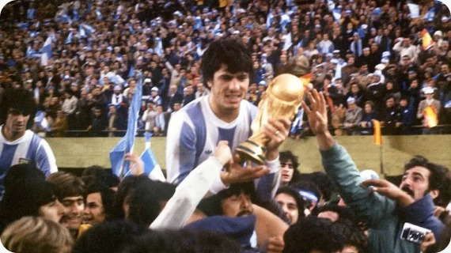

The 1978 FIFA World Cup was held in Argentina from 1 June to 25 June 1978. Argentina hosted the tournament for the first time and won their first FIFA World Cup title. The competition featured 16 teams and 38 matches. In the final, Argentina defeated the Netherlands 3–1 after extra time at the Estadio Monumental in Buenos Aires. Mario Kempes was the tournament's top scorer with 6 goals and was named the best player of the tournament. Brazil finished third, while Peru finished fourth. The 1978 World Cup is remembered as a historic milestone in Argentine football history.
1978
